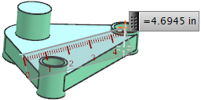
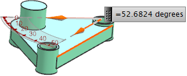
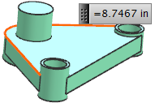
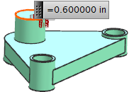
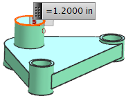

Simple Measure commands
What is it?
Use the Simple Measure commands to obtain measurements quickly. These commands have simplified dialog boxes.
-
Simple Distance calculates the distance between two objects.

-
Simple Angle calculates the angle between two objects.

-
Simple Length calculates the length of the selected curve.

-
Simple Radius calculates the radius of circular objects.

-
Simple Diameter calculates the diameter of circular objects.

Where do I find it?
|
Toolbar |
Utility→Simple Measure Drop-down list→Simple Distance or Simple Angle or Simple Length |
|
Menu |
Analysis→Measure→Simple Distance or Simple Angle or Simple Length or Simple Radius or Simple Diameter |